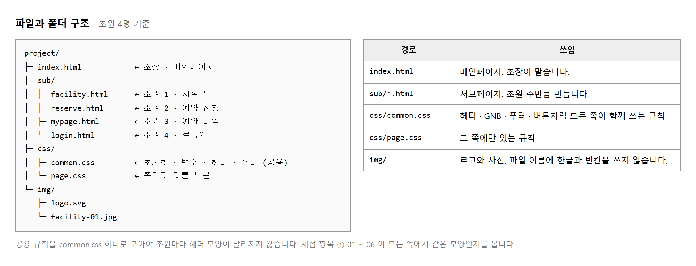
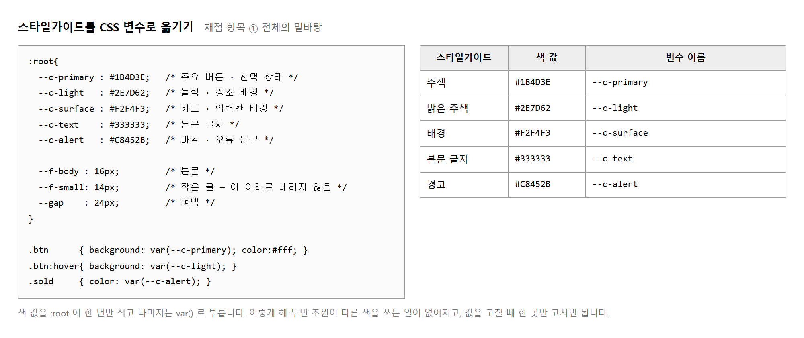
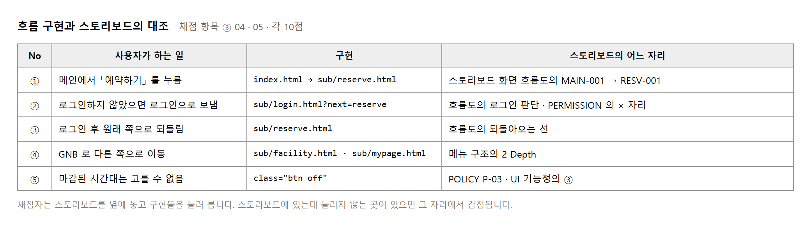
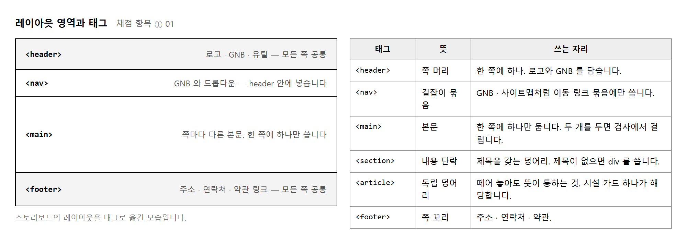
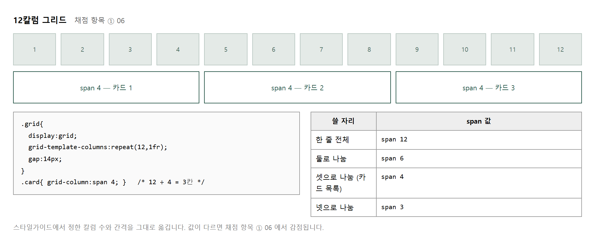
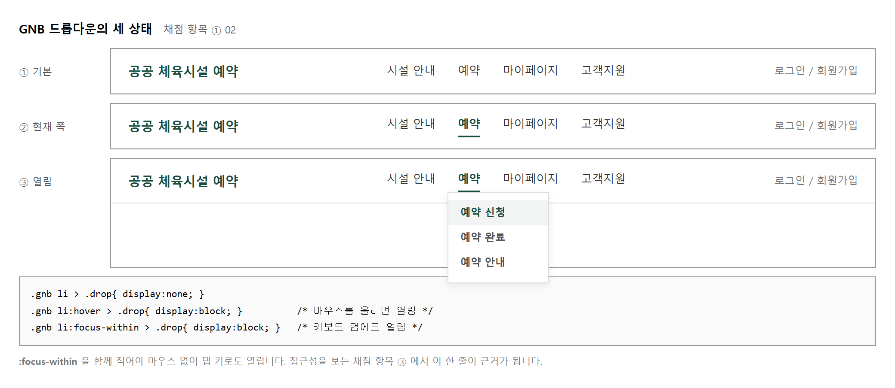
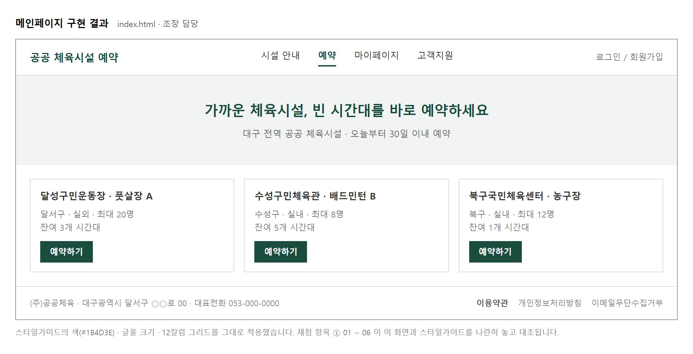
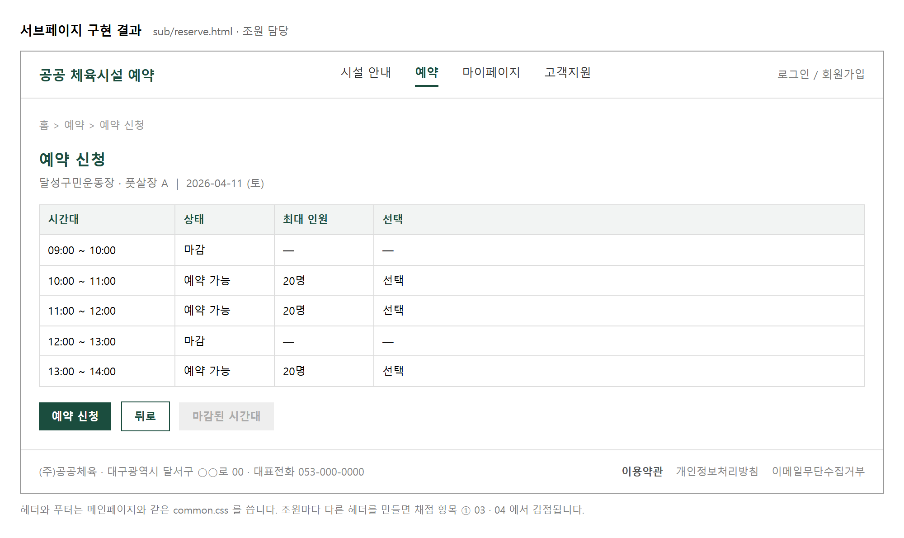
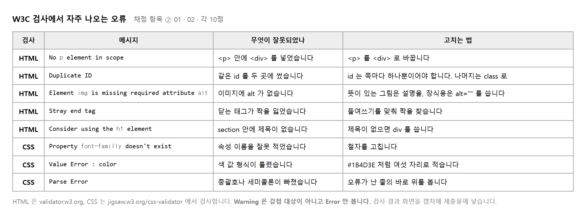
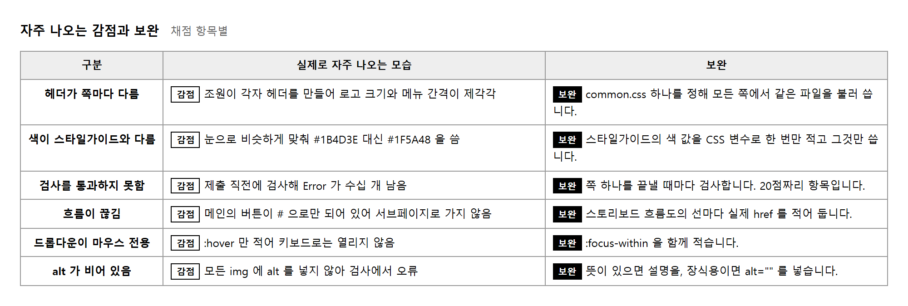

능력단위 화면 구현 (2001020225_23v6) / 3수준 · 평가방법 포트폴리오 (100점)
| 작업지시서 | 역할 나누기 · 제출물 셋 · 캡처 규칙이 여기 적혀 있습니다 |
| 스타일가이드 | 화면 설계 교과의 산출물. 색 · 글자 · 부품 · 레이아웃 값 (실습 3) |
| 스토리보드 | 화면 목록 · 흐름도 · 메뉴 구조도 · UI 기능정의 (실습 4 · 5 · 6) |
| 조원 명단 | 서브페이지가 조원 수만큼 필요합니다 (실습 2) |
이 교과는 앞 교과에서 만든 스타일가이드와 스토리보드를 HTML 과 CSS 로 옮기는 일을 다룹니다. 새로 기획하는 것이 없습니다. 채점은 대부분 「앞 문서와 같은가」 를 봅니다.
| 묶음 | 무엇을 보는가 | 채점 항목 | 배점 |
|---|---|---|---|
| ① | 스타일가이드대로 만들었는가 | 레이아웃 · GNB 드롭다운 · 로고 · 푸터 · 버튼 · 그리드 (각 5점) | 30 |
| ② | W3C 표준을 지켰는가 | HTML 검사 통과 10점 · CSS 검사 통과 10점 | 20 |
| ③ | 스토리보드대로 동작하는가 | 메뉴구조 · 정책 · UI 기능정의 · 로그인 흐름 · 쪽 이동 (각 10점) | 50 |
쪽은 조원 수만큼 필요합니다. 조장이 메인페이지를, 조원이 서브페이지를 하나씩 맡습니다. 누가 무엇을 맡았는지는 업무 내용 PPT 에 적어 냅니다.
# 으로 남겨 두면
50점 가운데 20점(로그인 흐름 · 쪽 이동)이 그대로 날아갑니다.
세 교과가 이어집니다. 화면 설계에서 무엇을 만들지 정했고, UI 디자인에서 그것을 남에게 넘길 수 있는 문서로 만들었습니다. 이 교과는 그 문서를 받아 실제로 열리는 쪽으로 옮깁니다.
구현이라는 말 때문에 자바스크립트로 서버와 주고받는 일까지 떠올리기 쉽습니다. 이 교과의 범위는 거기까지 가지 않습니다. 화면이 스토리보드대로 보이고, 눌렀을 때 스토리보드대로 이동하면 됩니다.
다섯 단계로 나누었습니다. 예제는 앞 교과와 같은 공공 체육시설 예약 서비스 이며, 앞 교과에서 만든 스토리보드를 그대로 이어 씁니다.
레벨 3까지는 조원이 함께 합니다. 공통 골격을 한 번 만들어 모두가 나눠 쓰는 것이 이 교과에서 점수를 지키는 방법입니다. 레벨 4부터 각자 맡은 쪽을 만듭니다.
제출물은 셋입니다. 코드만 내고 나머지를 빠뜨리는 조가 매 기수 나옵니다.
| No | 제출물 | 내용 |
|---|---|---|
| 1 | 구현 코드 | 메인페이지 1 + 서브페이지 (조원 수만큼) + css + img |
| 2 | 검사 결과 캡처 | HTML 검사 · CSS 검사 결과 화면. 쪽마다 찍습니다 |
| 3 | 업무 내용 PPT | 누가 어느 쪽을 맡았고 무엇을 했는지. 쪽별 화면 캡처를 함께 넣습니다 |
업무 내용 PPT 는 채점 항목에 직접 걸려 있지 않으나, 작업지시서가 「각 역할별로 업무 내용을 PPT 에 포함시킵니다」 라고 못 박고 있습니다. 빠지면 제출물 미비로 처리됩니다.
채점 항목 13개 가운데 11개가 「스타일가이드에 맞게」 또는 「스토리보드에 맞게」 로 시작합니다. 나머지 둘은 W3C 표준 검사입니다. 즉 무엇을 만들지 고민할 자리가 없습니다.
그래서 이 교과에서 시간을 잃는 자리는 대체로 둘입니다. 앞 문서를 열어 보지 않고 기억으로 만들다가 어긋나는 경우, 그리고 앞 문서에 적혀 있지 않은 것을 새로 정하느라 멈추는 경우입니다.
앞 문서에 없는 값(이를테면 카드의 모서리 둥글기)을 만나면 그 자리에서 정하고 스타일가이드에도 적어 둡니다. 그러면 다음에 같은 값이 필요할 때 조원끼리 어긋나지 않습니다.
목적 — 채점 13개 가운데 11개가 「스타일가이드에 맞게」 또는 「스토리보드에 맞게」 로 시작합니다. 새로 정할 것이 없습니다. 그래서 시간을 잃는 자리도 딱 둘입니다.
| 시간을 잃는 자리 | 막는 법 |
|---|---|
| 앞 문서를 안 열고 기억으로 만들다 어긋남 | 두 문서를 한 화면에 띄워 두고 시작합니다 |
| 앞 문서에 없는 값을 만나 멈춤 | 그 자리에서 정하고 스타일가이드에도 적습니다 |
| 제출물 | 내용 | |
|---|---|---|
| 1 | 구현 코드 | 메인 1 + 서브(조원 수만큼) + css + img |
| 2 | 검사 결과 캡처 | HTML 검사 · CSS 검사 화면. 쪽마다 찍습니다 |
| 3 | 업무 내용 PPT | 누가 어느 쪽을 맡아 무엇을 했는지 + 쪽별 캡처 |
① 스타일가이드대로 만들었는가 30점 (6항목 × 5점)
② W3C 표준을 지켰는가 20점 (HTML 10 · CSS 10)
③ 스토리보드대로 «동작» 하는가 50점 (5항목 × 10점)
----
100점
# 으로 남겨 두면
로그인 흐름과 쪽 이동 20점이 그대로 날아갑니다.
예쁜 것보다 «눌러서 넘어가는 것» 이 먼저입니다.왼쪽 화면 : 만드는 코드
오른쪽 화면 : 스타일가이드 · 스토리보드
# 화면이 하나면
스타일가이드를 «인쇄» 하거나 다른 기기에 띄워 두십시오
이 교과의 작업은 처음부터 끝까지 그 두 문서를 옆에 놓고 합니다. 덮어 두고 만들면 반드시 어긋납니다.
| 이런 일이 생기면 | 볼 곳 |
|---|---|
| 앞 교과 문서가 없음 | 같은 조의 화면 설계 제출물을 받으십시오. 없으면 이 교과를 시작할 수 없습니다 |
| 스타일가이드에 값이 비어 있음 | 정하고 적으십시오 — 위 상자 |
| 스토리보드와 조원 수가 안 맞음 | 실습 2 에서 정리합니다 |
제출물 — 없습니다. 낼 것 셋과 배점 세 줄을 적어 두십시오
스스로 확인 — ① 낼 것이 셋인 것을 압니까 ② ③ 이 50점 인 것을 압니까 ③ 앞 문서 둘을 열어 두었습니까
폴더를 먼저 만들고 시작합니다. 나중에 옮기면 CSS 와 이미지 경로가 전부 깨집니다.

sub/ 아래에 모읍니다.
파일 이름에 한글과 빈칸을 쓰면 서버에 올렸을 때 열리지 않습니다.작업지시서가 조장은 메인페이지, 조원은 서브페이지로 정해 두었습니다. 서브페이지는 조원 수만큼 필요하므로, 어느 화면을 누가 맡을지 스토리보드를 보고 정합니다.
| 역할 | 맡는 쪽 | 고르는 기준 |
|---|---|---|
| 조장 | index.html |
공통 골격(헤더 · GNB · 푸터)을 함께 만들어 조원에게 넘깁니다 |
| 조원 1 | sub/facility.html |
목록 화면 — 카드나 표가 있는 쪽 |
| 조원 2 | sub/reserve.html |
입력 화면 — 폼과 버튼이 있는 쪽 |
| 조원 3 | sub/login.html |
로그인 — 흐름 채점(③ 04)이 걸리는 쪽 |
로그인 쪽은 반드시 누군가 맡아야 합니다. 채점 항목 ③ 04 가 「프로토타입의 흐름과 일치하게 로그인 화면 흐름을 구현하였는가」 를 봅니다. 10점입니다.
목적 — 파일을 한군데 쏟아 놓고 만들다가
나중에 sub/ 로 옮기면
CSS 와 이미지 경로가 «전부» 깨집니다.
고치는 데 한 시간씩 걸립니다.
index.html ← 조장 · 메인
css/
common.css ← 공용. 한 사람만 고칩니다
img/
logo.svg
gym1.jpg
sub/
facility.html ← 조원 1
reserve.html ← 조원 2
login.html ← 조원 3
시설 안내.html 이 아니라 facility.html 입니다.
영문 소문자와 - 만 쓰십시오.| 어디서 | CSS 를 부르는 길 |
|---|---|
index.html (뿌리) |
href="css/common.css" |
sub/facility.html |
href="../css/common.css" —
../ 가 붙습니다 |
../ 는 「한 칸 위로」 라는 뜻입니다.
sub/ 안에서 보면 css/ 는
위로 한 번 올라가야 있습니다.
눈으로는 안 보입니다. 파일이 정말 있는지 세어 주는 것을 만들어 두십시오.
python links.py site
· index.html 의 href="facility.html" → 그런 파일이 없습니다
· index.html 의 href="reserve.html" → 그런 파일이 없습니다
· sub\facility.html 의 href="css/common.css" → 그런 파일이 없습니다
· sub\facility.html 의 href="index.html" → 그런 파일이 없습니다
쪽 2 · 경로 8건 · 깨진 것 4건
# ../ 를 붙이고 sub/ 를 붙여 고친 뒤
python links.py site
쪽 3 · 경로 10건 · 깨진 것 0건
| 역할 | 맡는 쪽 | 고르는 기준 |
|---|---|---|
| 조장 | index.html |
공통 골격(헤더 · GNB · 푸터)을 함께 만들어 넘깁니다 |
| 조원 1 | sub/facility.html |
목록 화면 — 카드나 표가 있는 쪽 |
| 조원 2 | sub/reserve.html |
입력 화면 — 폼과 버튼이 있는 쪽 |
| 조원 3 | sub/login.html |
로그인 — 흐름 채점(③ 04)이 걸립니다 |
css/common.css 는 모두가 불러 씁니다.
둘이 동시에 고치면 한쪽 것이 사라집니다.
공용 CSS 담당 : 조장
· 색 · 글자 · 버튼 · 헤더 · 푸터 → 조장이 고침
· 내 쪽에만 쓰는 것 → 내 쪽 <style> 이 아니라
common.css 맨 «아래»에 내 이름 주석과 함께
| 이런 일이 생기면 | 볼 곳 |
|---|---|
| 서브페이지가 글자만 나옴 | CSS 경로에 ../ 가 빠졌습니다 — 절차 2 |
| 이미지가 깨진 그림으로 | 같은 까닭입니다. ../img/… 인지 보십시오 |
| 내 PC 에선 되는데 서버에선 안 됨 | 파일 이름에 한글이나 대문자가 있습니까. 서버는 대소문자를 가립니다 |
| 조원 수와 서브페이지 수가 다름 | 한 사람이 둘을 맡거나 한 쪽을 빼십시오. 빼면 메뉴에서도 빼야 합니다 (실습 4) |
| 공용 CSS 가 덮어써짐 | 담당을 안 정했습니다 — 절차 5 |
제출물 — 폴더 구조 화면 + 역할 표 + 경로 깨진 것 0건 화면
스스로 확인 — ① 폴더를 먼저 만들었습니까 ② 이름이 영문 소문자입니까 ③ 로그인 쪽 담당이 있습니까 ④ 경로 0건을 확인했습니까 ⑤ 공용 CSS 담당을 정했습니까
채점 항목 ① 여섯 개가 모두 「스타일 가이드에 맞게」 로 시작합니다. 조원이 각자 눈대중으로 색을 맞추면 쪽마다 조금씩 달라지고, 그 차이가 그대로 감점이 됩니다. 색 값을 한 곳에 적고 나머지는 그것을 불러 쓰면 어긋날 자리가 없어집니다.

:root 에 한 번만 적고 나머지는 var() 로 부릅니다.감점 쪽마다 #1B4D3E 와 #1F5A48 이 섞여 있음
권함 var(--c-primary) 하나만 씁니다
목적 — 채점 ① 여섯 개가 모두 「스타일 가이드에 맞게」 로 시작합니다. 조원이 각자 눈대중으로 색을 맞추면 쪽마다 조금씩 달라지고 그 차이가 그대로 감점입니다.
:root 에 한 번만 적습니다:root{
--primary: #2b4c7e; /* 헤더 · 기본 버튼 */
--accent: #e8590c; /* 가격 · 예약 버튼 */
--gap: 24px;
}
.hd{
background: var(--primary);
color: #fff;
height: 56px;
padding: 0 24px;
}
.btn{
height: 40px;
border-radius: 6px;
background-color: var(--accent);
color: #fff;
}
여섯 자리 값을 «복사» 하십시오. 눈으로 비슷하게 맞추지 마십시오. 스타일가이드에 값이 없으면 지금 정하고 거기에도 적습니다 (실습 1).
| 무엇을 변수로 | 몇 개 |
|---|---|
| 색 | 주조 · 강조 · 글자 · 테두리 — 넷 |
| 글자 크기 | 본문 · 작은 글 — 둘 |
| 여백 | 하나 (배수로 씁니다) |
스무 개를 만들면 쓰기 전에 찾느라 더 오래 걸립니다.
var(--accent) 를 var(--acent) 로
한 글자 빼고 브라우저에서 열어 보십시오.
W3C CSS 검사기에 오타난 파일을 넣었을 때
유효: False · 오류 2 · 경고 2
[error] line 9: Missing a semicolon before the property name “padding”
[error] line 12: Property “heigth” doesn't exist. The closest matching property name is “height”
[warn ] line 7: You have no color set … but you have set a background-color
[warn ] line 15: You have no background-color set … but you have set a color
오류·경고 4건 가운데 --acent 를 언급한 것 : 0건
heigth 오타는 잡아 주는데 --acent 는 안 잡습니다.
속성 이름은 정해진 목록이 있어 견줄 수 있지만,
변수 이름은 내가 마음대로 짓는 것이라
검사기가 맞는지 틀린지 알 방법이 없습니다.
python vars.py css/common.css
정한 변수 3 · 쓴 변수 3
· --acent 은 :root 에 없습니다 — «조용히» 아무 색도 안 나옵니다
(비슷한 것: --accent, --gap, --primary)
· --accent 는 정해 놓고 «안 씁니다»
지적 1건
# 고친 뒤
정한 변수 3 · 쓴 변수 3
변수 대조 통과
--acent 가 없는 이름으로 잡히면서
--accent 가 안 쓰이는 이름으로 같이 잡힙니다.
이 짝이 보이면 거의 오타입니다.이 시점 이후 색 값을 직접 적는 사람이 없어야 합니다.
| 감점 | 권함 |
|---|---|
쪽마다 #2b4c7e 와 #2B4D7F 가 섞여 있음 |
var(--primary) 하나만 씁니다 |
| 이런 일이 생기면 | 볼 곳 |
|---|---|
| 색이 안 칠해짐 | 변수 이름 오타가 첫 번째 의심입니다 — 절차 5 |
:root 를 쪽마다 적음 |
common.css 에 한 번만 적습니다 |
| 변수가 안 먹음 | var(--x) 인지 보십시오.
var(x) 나 --x 는 안 됩니다 |
| 조원마다 색이 다름 | 공용 파일을 안 받아 갔습니다 — 절차 6 |
| 검사기가 통과인데 색이 이상 | 정상입니다 — 절차 4. 검사기는 변수를 안 봅니다 |
제출물 — common.css 의 :root 부분 +
변수 대조 통과 화면 + 스타일가이드와 색값이 같은 것
스스로 확인 — ① 색 값을 복사해 왔습니까 ② 오타를 내 보고 조용히 틀리는 것을 봤습니까 ③ 변수 대조를 돌렸습니까 ④ 색 값을 직접 적는 곳이 없습니까
앞 교과의 화면 흐름도는 화면 이름으로 그려져 있습니다. 구현하려면 그것을 파일 이름으로 바꿔야 합니다. 이 옮겨 적기를 먼저 해 두면 나중에 링크를 고민하지 않아도 됩니다.

href 하나가 됩니다.아래 표를 조별로 하나 만들어 두고 시작합니다. 구현 중에 「이 버튼 어디로 보내지」 하고 멈추는 일이 없어집니다.
| SCREEN ID | 화면명 | 파일 | 담당 | 들어오는 자리 |
|---|---|---|---|---|
| MAIN-001 | 메인 | index.html | 조장 | 로고 · 첫 화면 |
| FACL-001 | 시설 목록 | sub/facility.html | 조원 1 | GNB 「시설 안내」 |
| RESV-001 | 예약 신청 | sub/reserve.html | 조원 2 | 메인 카드의 「예약하기」 |
| LOGN-001 | 로그인 | sub/login.html | 조원 3 | 유틸 「로그인」 · 예약 신청의 판단 |
「들어오는 자리」 칸이 중요합니다. 아무 데서도 들어오지 않는 쪽은 만들어도 채점자가 찾지 못합니다.
마지막 항목이 자주 걸립니다. 조원이 넷인데 흐름도의 화면이 여섯이면 둘은 만들어지지 않습니다. 그 자리에서 흐름이 끊기므로 미리 정해 둡니다. 맡지 않을 화면은 링크를 걸지 않고 메뉴에서도 뺍니다.
href 하나
목적 — 앞 교과의 흐름도는 화면 이름으로 그려져 있습니다. 구현하려면 파일 이름으로 바꿔야 합니다. 이 옮겨 적기를 먼저 해 두면 구현 중에 「이 버튼 어디로 보내지」 하고 멈추는 일이 없습니다.
SCREEN ID,화면명,파일,담당,들어오는 자리
MAIN-001,메인,index.html,조장,로고 · 첫 화면
FACL-001,시설 목록,sub/facility.html,조원 1,GNB 「시설 안내」
RESV-001,예약 신청,sub/reserve.html,조원 2,메인 카드의 「예약하기」
LOGN-001,로그인,sub/login.html,조원 3,유틸 「로그인」 · 예약 신청의 판단
MYPG-001,마이페이지,sub/mypage.html,,GNB 「마이페이지」
조원이 넷인데 흐름도의 화면이 여섯이면 둘은 안 만들어집니다. 그 자리에서 흐름이 끊깁니다.
python flow.py flow.csv site
흐름도 화면 5 · 담당 4명
지적 3건
· LOGN-001 → sub/login.html 이 아직 «없습니다»
· MYPG-001 마이페이지 → 맡은 사람이 «없습니다»
· MYPG-001 → sub/mypage.html 이 아직 «없습니다»
| 이렇게 나오면 | 둘 중 하나를 고릅니다 |
|---|---|
| 맡은 사람이 없음 | ① 누군가 두 쪽을 맡거나 ② 안 만들기로 정합니다 |
| 파일이 아직 없음 | 만들기 전이면 정상입니다. 레벨 4 가 끝나면 0건이어야 합니다 |
# 으로 두면
눌러도 아무 일이 안 일어납니다.
채점 ③ 05 쪽 이동(10점) 에서 그대로 걸립니다.
없는 쪽은 메뉴에도 없어야 합니다.| 확인 | 안 되어 있으면 | |
|---|---|---|
| 1 | 화면마다 맡을 사람과 파일 이름이 있는가 | 절차 2 |
| 2 | 판단(로그인 여부 · 권한)이 몇 군데인가 | 그 자리가 ③ 04 입니다 |
| 3 | 되돌아오는 선이 있는가 · 어디로 되돌아오는가 | 로그인 뒤 원래 가려던 쪽으로 가야 합니다 |
| 4 | 흐름도에 있는데 아무도 안 맡은 화면 | 가장 자주 걸립니다 — 절차 2 |
href 로 옮겨 적습니다흐름도의 화살표 구현
메인 ──▶ 시설 목록 <a href="sub/facility.html">시설 안내</a>
시설 목록 ──▶ 예약 신청 <a href="reserve.html">예약하기</a>
# 같은 sub/ 안이라 ../ 가 «없습니다»
예약 신청 ┈▶ 로그인 <a href="login.html">로그인</a>
[비로그인일 때] # 점선 = 조건. 실습 13 에서 다룹니다
로그인 ──▶ 예약 신청 <a href="reserve.html">…</a>
(되돌아오는 선)
같은 폴더 안이면 ../ 가 없습니다.
sub/facility.html 에서 sub/reserve.html 로 갈 때는
reserve.html 만 적습니다 (실습 2).
| 이런 일이 생기면 | 볼 곳 |
|---|---|
| 흐름도에 파일 이름이 없음 | 당연합니다. 지금 붙이는 것이 이 실습입니다 |
| 화면이 조원보다 많음 | 절차 2 — 겸하거나 빼십시오 |
| 되돌아오는 선이 어디로 가는지 모름 | 앞 교과 유스케이스 명세서의 예외흐름을 보십시오. 「로그인 화면으로 보냅니다」 뒤에 무엇이 적혀 있는지 |
| 표를 안 만들고 바로 코딩함 | 버튼마다 멈추게 됩니다. 십 분이면 만듭니다 |
제출물 — 다섯 열 표 + 대조 결과 + 안 만들기로 한 화면이 있으면 그 까닭 한 줄
스스로 확인 — ① 화면마다 파일 이름이 붙었습니까 ② 맡은 사람 없는 화면이 없습니까 ③ 들어오는 자리가 다 적혔습니까 ④ 되돌아오는 선의 목적지를 압니까
메뉴 구조도의 대메뉴가 GNB 항목이 되고, 하위 메뉴가 드롭다운 항목이 됩니다. 구조도를 그대로 목록 태그로 옮기면 마크업이 저절로 만들어집니다.
<nav>
<ul class="gnb">
<li><a href="/sub/facility.html">시설 안내</a>
<ul class="drop">
<li><a href="/sub/facility.html">시설 목록</a></li>
<li><a href="/sub/facility.html#detail">시설 상세</a></li>
</ul>
</li>
<li><a href="/sub/reserve.html">예약</a> …</li>
</ul>
</nav>
바깥 <ul> 이 대메뉴, 안쪽 <ul class="drop"> 이 하위 메뉴입니다.
메뉴 구조도가 2 Depth 면 <ul> 이 두 겹, 3 Depth 면 세 겹이 됩니다.
구조도와 겹 수가 다르면 채점 항목 ③ 01 에서 감점됩니다.
메뉴 구조도에는 없지만 구현에서는 필요한 것이 하나 있습니다.
지금 어느 쪽에 있는지를 GNB 에서 보여 주는 일입니다.
쪽마다 해당 항목에 class="on" 을 답니다.
<!-- sub/reserve.html --> <li class="on"><a href="reserve.html" aria-current="page">예약</a></li>
aria-current="page" 는 화면을 읽어 주는 기기에 「지금 이 쪽」 이라고 알립니다.
눈으로 보는 표시(class="on")와 짝을 이룹니다.
| 자리 | 무엇과 같아야 하는가 |
|---|---|
| GNB 항목 | 메뉴 구조도의 대메뉴 이름 |
| 드롭다운 항목 | 메뉴 구조도의 하위 메뉴 이름 |
| 위치 표시 (breadcrumb) | 위 둘을 이은 경로 |
세 곳 가운데 하나만 달라도 채점자는 어느 쪽이 맞는지 알 수 없습니다. 구조도의 낱말을 그대로 복사해 붙입니다.
<li> 로, 하위 메뉴를 안쪽 <li> 로
옮겨 적어 보십시오. 구조도에 없는 메뉴가 코드에 들어가면 안 됩니다.
목적 — 메뉴 구조도의 대메뉴가 <li>,
하위 메뉴가 안쪽 <li> 가 됩니다.
구조도를 그대로 옮기면 마크업이 저절로 만들어집니다.
<nav>
<ul class="gnb"> ← 1 겹 · 대메뉴
<li><a href="sub/facility.html">시설 안내</a>
<ul class="drop"> ← 2 겹 · 하위 메뉴
<li><a href="sub/facility.html">시설 목록</a></li>
<li><a href="sub/facility.html#detail">시설 상세</a></li>
</ul>
</li>
<li><a href="sub/reserve.html">예약</a> … </li>
</ul>
</nav>
<ul> 이 «두 겹» 입니다.
3 Depth 면 세 겹입니다.
구조도와 겹 수가 다르면 채점 ③ 01 에서 감점됩니다.
구조도는 2 단인데 코드는 한 줄로 평평하게 늘어놓는 일이 흔합니다.들여쓰기만 보고 세면 틀립니다. 태그를 세십시오.
python depth.py gnb.html
겹 수(Depth) : 2
1단 시설 안내
2단 시설 목록
2단 시설 상세
1단 예약
2단 예약 신청
1단 마이페이지
이 목록을 메뉴 구조도 옆에 놓고 «한 줄씩» 대 보십시오. 구조도에 없는 메뉴가 코드에 들어가면 안 됩니다. 반대로 구조도에 있는데 빠진 것도 안 됩니다.
메뉴 구조도에는 없지만 구현에서는 필요한 것이 하나 있습니다.
<!-- sub/reserve.html -->
<li class="on"><a href="reserve.html" aria-current="page">예약</a></li>
| 무엇 | 누구에게 알리나 |
|---|---|
class="on" |
눈으로 보는 표시 — CSS 로 색이나 밑줄을 줍니다 |
aria-current="page" |
화면을 읽어 주는 기기에 「지금 이 쪽」 이라고 알립니다 |
둘은 짝입니다. 하나만 있으면 한쪽 사용자만 압니다.
| 자리 | 무엇과 같아야 하는가 |
|---|---|
| GNB 항목 | 메뉴 구조도의 대메뉴 이름 |
| 드롭다운 항목 | 메뉴 구조도의 하위 메뉴 이름 |
| 위치 표시 (breadcrumb) | 위 둘을 이은 경로 |
구조도 : 시설 안내 > 시설 목록
GNB : 시설 안내 ○
드롭다운 : 시설 목록 ○
breadcrumb : 홈 > 시설 안내 > 시설 목록 ○
세 곳 가운데 하나만 달라도 채점자는 어느 쪽이 맞는지 알 수 없습니다. 구조도의 낱말을 그대로 복사해 붙이십시오 — 「시설안내」 와 「시설 안내」 는 다른 이름입니다.
| 이런 일이 생기면 | 볼 곳 |
|---|---|
| 겹 수가 1 로 나옴 | 안쪽 <ul> 이 </li> 밖에 있습니다.
바깥 <li> 안에 넣으십시오 |
| 겹 수가 3 인데 구조도는 2 | <ul> 을 한 겹 더 쌌습니다 |
| 구조도에 없는 메뉴가 있음 | 빼십시오. 마음대로 더하면 감점입니다 |
| 드롭다운이 항상 보임 | CSS 로 감추고 hover 에 보입니다 — 실습 9 |
class="on" 이 모든 쪽에 같은 자리 |
쪽마다 다른 항목에 답니다 |
제출물 — GNB 마크업 + 겹 수 화면 + 구조도와 이름을 대조한 표
스스로 확인 —
① 겹 수가 구조도와 같습니까
② 구조도에 없는 메뉴가 없습니까
③ class="on" 과 aria-current 가 짝입니까
④ 이름을 복사해 왔습니까
UI 기능정의 한 쪽이 곧 구현할 쪽 하나입니다. 거기 적힌 Description 의 번호가 그 쪽에 들어갈 요소 목록이 됩니다.
| 번호 | UI 기능정의의 설명 | 구현할 것 |
|---|---|---|
| ① | 앞 화면에서 고른 시설명을 그대로 받아 표시 | 읽기 전용 영역. 입력칸이 아닙니다 |
| ② | 달력에서 날짜를 고름. 30일 이내 | <input type="date"> 와 max 속성 |
| ③ | 마감된 시간대는 흐리게 하고 누를 수 없게 함 | 버튼에 disabled 와 흐린 색 |
| ④ | 숫자만 넣음. 최대 인원 초과 시 안내 | <input type="number"> 와 max |
| ⑤ | 모두 채워져야 눌림. 누르면 다음 쪽으로 | 제출 버튼과 href |
이 표를 쪽마다 하나씩 만들어 두면 구현할 때 무엇을 빠뜨렸는지 바로 보입니다. 채점 항목 ③ 03 이 「스토리보드에 맞게 UI 기능정의가 구현되었는가」 를 봅니다. 10점입니다.
목적 — UI 기능정의 한 쪽이 곧 구현할 쪽 하나입니다.
거기 적힌 Description 의 번호가
그 쪽에 들어갈 요소 목록이 됩니다.
채점 ③ 03 이 이것을 봅니다 — 10점입니다.
| UI 기능정의의 설명 | 구현할 것 | |
|---|---|---|
| ① | 앞 화면에서 고른 시설명을 그대로 받아 표시 | 읽기 전용 영역. 입력칸이 아닙니다 |
| ② | 달력에서 날짜를 고름. 30일 이내 | <input type="date"> 와 max |
| ③ | 마감된 시간대는 흐리게 하고 누를 수 없게 | disabled 와 흐린 색 |
| ④ | 숫자만 넣음. 최대 인원 초과 시 안내 | <input type="number"> 와 max |
| ⑤ | 모두 채워져야 눌림. 누르면 다음 쪽으로 | 제출 버튼과 action |
<input> 으로 만들면 사용자가 고칠 수 있게 됩니다.
앞 화면에서 고른 것을 받아 보여 주는 것이므로
<p> 나 <output> 이 맞습니다.<form action="done.html" method="get">
<p class="ro" data-ui="1">중앙체육관</p>
<label for="d">날짜</label>
<input type="date" id="d" name="d" max="2026-10-21" data-ui="2" required>
<fieldset data-ui="3">
<legend>시간대</legend>
<button type="button">09:00</button>
<button type="button" disabled>10:00</button>
</fieldset>
<label for="n">인원</label>
<input type="number" id="n" name="n" min="1" max="20" data-ui="4" required>
<button type="submit" data-ui="5">신청</button>
</form>
data- 로 시작하는 이름은 내가 마음대로 붙여도 되는 것입니다.
W3C 검사에서 오류가 안 납니다 — 실습 15 에서 확인합니다.
python ui.py site/sub/reserve.html 5
reserve.html — UI 기능정의 5개 · 화면에서 찾은 것 5개
대조 통과 — 번호만큼 다 있습니다
# ③ 을 안 만들었다면
reserve.html — UI 기능정의 5개 · 화면에서 찾은 것 4개
· 3번이 «없습니다» — 이 번호가 곧 감점입니다
지적 1건
label 과 id 를 짝지읍니다<label for="d">날짜</label>
<input type="date" id="d">
for 와 id 가 같아야
글자를 눌러도 입력칸이 잡힙니다.
화면을 읽어 주는 기기도 이것으로 짝을 압니다 —
수행준거가 「접근성과 사용 편의를 고려」 를 요구합니다.
| 확인 | 보는 곳 |
|---|---|
| 번호가 몇 개인가 | 그 수만큼 화면에 요소가 있어야 합니다 |
CheckPoint 에 적힌 조건 가운데
화면에서 보여 줄 수 있는 것 |
30일 이내 → max 속성으로 보입니다 |
| 다른 쪽으로 넘어가는 번호 | 그 번호가 링크가 됩니다 (실습 13) |
| 이런 일이 생기면 | 볼 곳 |
|---|---|
| 번호가 모자람 | 대개 상태 요구(③ 같은 것)입니다 — 절차 3 |
| ①을 입력칸으로 만듦 | 절차 1 상자 — 읽기 전용입니다 |
disabled 가 안 보임 |
흐린 색을 CSS 로도 주십시오.
[disabled]{opacity:.5} |
max 를 안 넣음 |
CheckPoint 의 조건이 화면에 안 보입니다 |
| 글자를 눌러도 입력칸이 안 잡힘 | for 와 id 가 다릅니다 — 절차 4 |
제출물 — 쪽마다 번호 대조표 + 대조 통과 화면 + 폼 마크업
스스로 확인 —
① 번호를 세어 봤습니까
② 상태 요구(흐리게 · 못 누르게)를 만들었습니까
③ label 과 id 가 짝입니까
④ 넘어가는 번호가 어느 것인지 압니까
레이아웃은 네 덩어리로 나뉘고, 덩어리마다 쓸 태그가 정해져 있습니다.
전부 <div> 로 만들어도 화면은 나오지만,
표준 검사와 접근성 항목에서 불리해집니다.

화면만 놓고 보면 차이가 없습니다. 달라지는 것은 셋입니다.
<section> 에 제목이 없거나 <main> 이 두 개면 지적을 받습니다.
반대로 태그를 제대로 쓰면 구조가 맞는지를 검사기가 대신 봐 줍니다.<div> 면 건너뛸 지점이 없어 처음부터 끝까지 들어야 합니다.<header> 안은 공용, <main> 안은 각자 —
이렇게 정해 두면 누가 어디를 고쳐도 되는지가 분명해집니다.<!doctype html> <html lang="ko"> <head> <meta charset="utf-8"> <meta name="viewport" content="width=device-width,initial-scale=1"> <title>공공 체육시설 예약</title> <link rel="stylesheet" href="css/common.css"> <link rel="stylesheet" href="css/page.css"> </head> <body> <header> 로고 · GNB · 유틸 </header> <main> 쪽마다 다른 본문 </main> <footer> 주소 · 약관 </footer> </body> </html>
lang="ko" 와 <meta charset> 이 빠지면 검사에서 바로 걸립니다.
이 뼈대를 한 번 만들어 조원에게 돌리고, 각자는 <main> 안만 채웁니다.
12는 2 · 3 · 4 · 6 으로 나누어떨어집니다. 한 줄을 둘로도, 셋으로도, 넷으로도 나눌 수 있어 대부분의 배치를 담을 수 있습니다. 스타일가이드에 다른 수가 적혀 있으면 그것을 따릅니다.

span 4 를 씁니다.감점 카드를 float 와 width:33% 로 만들어 간격이 들쭉날쭉
권함 display:grid 와 gap 을 씁니다. 간격이 한 값으로 정해집니다
간격 값도 스타일가이드에서 가져옵니다. 여백이 24px 로 적혀 있으면
gap: var(--gap) 로 씁니다.
gap 값을 확인해 보십시오. 스타일가이드의 값과 같아야 합니다.
GNB 는 상태가 셋입니다. 지금 보고 있는 쪽을 표시하는 것까지가 채점 대상입니다.

로고는 모든 쪽에서 같은 자리, 같은 크기여야 합니다. 그리고 누르면 메인페이지로 가야 합니다. 이것이 빠지는 조가 많습니다.
<h1 class="logo">
<a href="/index.html">
<img src="img/logo.svg" alt="공공 체육시설 예약">
</a>
</h1>
이미지 로고에는 alt 에 서비스 이름을 적습니다.
「로고」 라고만 적으면 화면을 읽어 주는 기기에서 뜻이 전해지지 않습니다.
<li class="has-drop">
<a href="reserve.html">예약</a>
<ul class="drop">
<li><a href="reserve.html">예약 신청</a></li>
<li><a href="reserve.html#done">예약 완료</a></li>
</ul>
</li>
.gnb li{ position:relative; } 기준점 — 이것이 없으면 드롭다운이 엉뚱한 곳에 뜸
.drop { position:absolute; top:100%; left:0; display:none; }
.gnb li:hover > .drop,
.gnb li:focus-within > .drop{ display:block; }
position:relative 를 부모에 주는 것을 빠뜨리면
드롭다운이 쪽 맨 위로 올라가 버립니다. 가장 자주 나오는 실수입니다.
스타일가이드에 정해 둔 방식을 그대로 씁니다. 대개 셋 중 하나입니다.
세 가지를 한꺼번에 쓰면 다른 항목과 견주어 지나치게 튑니다. 하나나 둘로 정합니다.
:hover 로만 만들면 마우스 없이 열 수 없습니다.
:focus-within 한 줄을 함께 적으면 탭 키로도 열립니다.
접근성을 보는 채점 묶음 ③ 에서 이 한 줄이 근거가 됩니다.
스타일가이드에 정해 둔 버튼 종류를 그대로 만듭니다. 대개 주요 · 보조 · 비활성 셋입니다.
.btn { background: var(--c-primary); color:#fff; }
.btn.gh { background:#fff; color:var(--c-primary);
border:1px solid var(--c-primary); } 보조
.btn.off { background:#eee; color:#aaa;
pointer-events:none; } 비활성
비활성 버튼은 색만 흐리게 하는 것으로 끝내지 않습니다.
눌리지 않아야 합니다. 폼 안의 버튼이면 disabled 속성을 함께 씁니다.
보기에는 같아도 태그가 다릅니다. 기준은 눌렀을 때 쪽이 바뀌는가 입니다.
| 태그 | 쓰는 자리 | 예 |
|---|---|---|
| <a> | 다른 쪽으로 갑니다 | 「예약하기」 「시설 목록」 「뒤로」 |
| <button> | 그 쪽에서 무언가를 합니다 | 「시간대 선택」 「검색」 폼의 「제출」 |
<div class="btn"> 로 만들면 탭 키로 갈 수 없고 엔터로 눌리지도 않습니다.
검사에서는 걸리지 않지만 접근성을 보는 자리에서 불리합니다.
채점 항목 ① 04 가 「스타일 가이드에 맞게 푸터의 항목은 적절히 배치되어 있는가」 를 봅니다. 스타일가이드에 적어 둔 항목이 빠짐없이 들어가고 순서도 같아야 합니다.
| 항목 | 내용 |
|---|---|
| 사업자 정보 | 상호 · 주소 · 대표전화 |
| 약관 링크 | 이용약관 · 개인정보처리방침 · 이메일무단수집거부 |
| 강조 | 개인정보처리방침은 굵게 하는 것이 관례입니다 |
푸터도 common.css 에 두어 모든 쪽에서 같은 모양이 되게 합니다.
서브페이지의 푸터가 메인과 다르면 그 자리에서 감점됩니다.

<main>
<section class="hero">
<h2>가까운 체육시설, 빈 시간대를 바로 예약하세요</h2>
<p>대구 전역 공공 체육시설 · 오늘부터 30일 이내 예약</p>
</section>
<section class="wrap">
<h2 class="sr">시설 목록</h2>
<div class="grid">
<article class="card">
<h3>달성구민운동장 · 풋살장 A</h3>
<p>달서구 · 실외 · 최대 20명<br>잔여 3개 시간대</p>
<a class="btn" href="sub/reserve.html">예약하기</a>
</article>
… 카드 반복
</div>
</section>
</main>
카드 하나가 <article> 입니다. 떼어 놓아도 뜻이 통하기 때문입니다.
<h2 class="sr"> 는 화면에 보이지 않게 감춘 제목입니다.
<section> 에 제목이 없으면 검사에서 지적을 받으므로 이렇게 넣어 둡니다.
.sr{ position:absolute; width:1px; height:1px;
overflow:hidden; clip:rect(0,0,0,0); } 화면에서만 감춤
제목 태그는 번호를 건너뛰지 않고 씁니다.
<h1> 다음에 <h3> 가 나오면 검사에서 지적을 받습니다.
| 단계 | 이 쪽에서의 자리 | 비고 |
|---|---|---|
| h1 | 로고 (서비스 이름) | 한 쪽에 하나만 씁니다 |
| h2 | 안내 문구 · 「시설 목록」 | 본문의 큰 덩어리마다 하나 |
| h3 | 시설 카드의 시설명 | h2 아래 덩어리 |
화면에 제목을 보이고 싶지 않을 때 태그를 빼지 말고 class="sr" 로 감춥니다.
구조는 남기고 화면에서만 없애는 방법입니다.
href 를 # 으로 두지 마십시오.
채점 항목 ③ 05 가 「메인페이지에서 서브페이지로의 이동이 구현되었는가」 를 봅니다. 10점입니다.

sub/ 안에 있으므로 CSS 와 이미지 경로가 달라집니다. 여기서 화면이 깨지는 일이 잦습니다.
| 위치 | CSS 부르기 | 메인으로 가기 |
|---|---|---|
| index.html | css/common.css | — |
| sub/reserve.html | ../css/common.css | ../index.html |
루트 기준 경로(/css/common.css)는 서버에 올렸을 때만 맞습니다.
파일을 그대로 열어 볼 때는 깨지므로, 제출물에는 ../ 를 쓰는 편이 안전합니다.
<nav class="bc" aria-label="현재 위치"> <a href="../index.html">홈</a> > <a href="reserve.html">예약</a> > <span>예약 신청</span> </nav>
위치 표시는 메뉴 구조도의 경로를 그대로 옮긴 것입니다. 구조도가 2 Depth 면 여기도 두 단계가 됩니다.
채점 항목 ③ 04 가 「프로토타입의 흐름과 일치하게 로그인 화면 흐름을 구현하였는가」 를 봅니다. 스토리보드의 흐름도에는 세 갈래가 있습니다.
sub/login.html?next=reserve
<a href="reserve.html">로그인</a>
서버가 없으므로 실제 판별은 되지 않습니다. 눌렀을 때 스토리보드에 적힌 쪽으로 가면 됩니다. 이 교과의 범위는 거기까지입니다.
메인의 카드 버튼, GNB 의 모든 항목, 푸터의 약관 링크, 로고 — 눌리는 것에는 전부 갈 곳이 있어야 합니다.
채점 항목 ③ 02 가 「스토리보드에 맞게 정책이 구현되었는가」 를 봅니다. 정책은 글로만 적혀 있으므로, 그것이 화면에서 어떻게 보이는지 정해 옮겨야 합니다.
| 정책 | 스토리보드의 내용 | 화면에서 드러나는 모습 |
|---|---|---|
| P-01 | 오늘부터 30일 이내의 날짜만 선택 | <input type="date" min="…" max="…"> |
| P-02 | 같은 날짜에 시설 1곳, 최대 2시간 | 입력칸 아래 안내 문구로 적어 둡니다 |
| P-03 | 마감된 시간대는 선택 목록에서 감춤 | 흐린 색 + disabled |
| P-04 | 이용 시작 24시간 전까지만 취소 | 예약 내역 쪽의 취소 버튼 옆 안내 |
| P-06 | 목록의 이름은 가운데 글자를 가림 | 예시 데이터를 홍*동 으로 적습니다 |
서버가 없으므로 실제로 막히지는 않습니다. 정책이 있다는 것이 화면에서 읽히면 됩니다. 안내 문구 한 줄, 흐린 버튼 하나가 근거가 됩니다.
<label for="d">이용 날짜</label> <input id="d" type="date" min="2026-03-27" max="2026-04-26"> <p class="hint">오늘부터 30일 이내만 고를 수 있습니다. [P-01]</p> <label for="n">이용 인원</label> <input id="n" type="number" min="1" max="20">
<label for> 와 <input id> 를 짝지어야 합니다.
짝이 없으면 검사에서 지적을 받고, 화면을 읽어 주는 기기에서 무엇을 넣는 칸인지 알 수 없습니다.
감점 정책표에는 30일 제한이 있는데 화면에는 아무 표시가 없음
권함 max 속성과 안내 문구를 함께 둡니다

제출 전에 채점표를 그대로 옮겨 적고, 항목마다 근거가 되는 파일과 자리를 적습니다. 적을 수 없는 항목이 곧 빠진 항목입니다.
| 항목 | 배점 | 확인할 것 | 근거 |
|---|---|---|---|
| ① 01 | 5 | 레이아웃이 스타일가이드대로 배치되었는가 | |
| ① 02 | 5 | GNB 드롭다운이 스타일가이드대로 구현되었는가 | |
| ① 03 | 5 | 로고가 스타일가이드대로 배치되었는가 | |
| ① 04 | 5 | 푸터 항목이 스타일가이드대로 배치되었는가 | |
| ① 05 | 5 | 버튼을 스타일가이드대로 배치하였는가 | |
| ① 06 | 5 | 그리드를 스타일가이드대로 배치하였는가 | |
| ② 01 | 10 | W3C 표준에 맞게 HTML 을 구현하였는가 | |
| ② 02 | 10 | W3C 표준에 맞게 CSS 를 구현하였는가 | |
| ③ 01 | 10 | 스토리보드에 맞게 메뉴 구조가 구현되었는가 | |
| ③ 02 | 10 | 스토리보드에 맞게 정책이 구현되었는가 | |
| ③ 03 | 10 | 스토리보드에 맞게 UI 기능정의가 구현되었는가 | |
| ③ 04 | 10 | 프로토타입의 흐름과 같게 로그인 흐름을 구현하였는가 | |
| ③ 05 | 10 | 메인에서 서브페이지로의 이동이 구현되었는가 |
project/ 를 통째로 압축합니다. 파일을 하나씩 고르면 경로가 깨집니다.
index.html 을 더블클릭해 화면이 나오는지 확인합니다.
여기서 깨지면 채점자 화면에서도 깨집니다.
아래 여섯 가지가 되풀이되는 감점입니다. 모두 실력이 모자라서가 아니라 순서를 바꿔서 생깁니다. 공통 골격을 먼저 만들고, 쪽마다 검사하고, 마지막에 눌러 보면 대부분 걸리지 않습니다.
